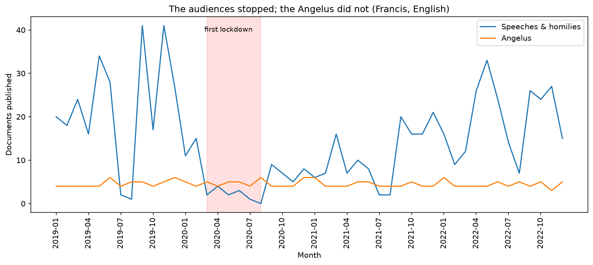
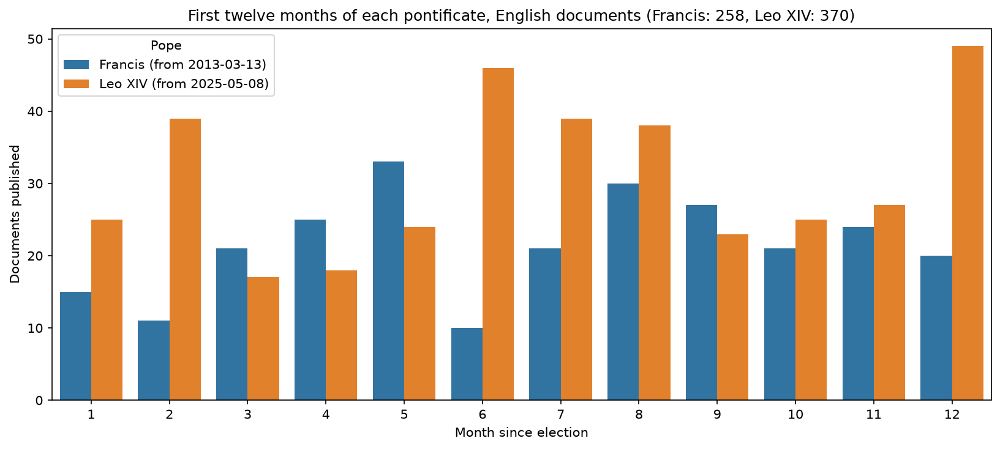
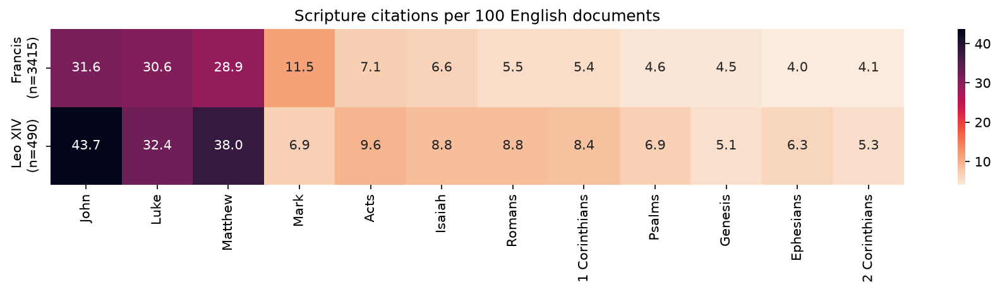
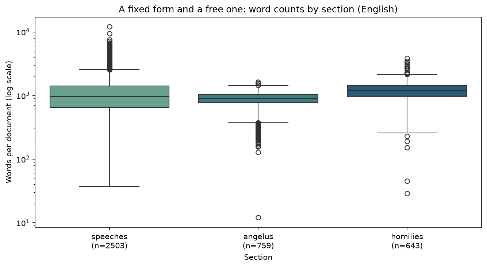

Findings
Four things the corpus says, and one thing it took a bug fix to be able to say at all. Every figure here is regenerated from the database by a single command:
1. The audiences stopped; the Angelus did not

A pope's public output is not one activity but two, and the pandemic separated them cleanly.
Counting English documents in the March–August window of four consecutive years:
| Mar–Aug | Speeches & homilies | Angelus |
|---|---|---|
| 2019 | 105 | 27 |
| 2020 | 12 | 29 |
| 2021 | 45 | 26 |
| 2022 | 116 | 26 |
Addresses and homilies fell by 89%. The Angelus went up by two.
The asymmetry is the point. Audiences, state visits and canonisations require an audience; when Saint Peter's Square closed, they simply stopped, and the line sits at zero for April, May, July and August 2020. The Sunday Angelus requires only a window, and Francis kept it every week, streamed from the Apostolic Palace library. One calendar is contingent on the world; the other is liturgical, and it did not miss a Sunday.
The recovery is visible too, and it is slow: 2021 recovers only to 45, still well under half of 2019, before 2022 overshoots 2019 entirely.
The summer dip is real, not missing data
Every year shows a July–August trough. That is the papal summer break, not a gap in the scrape — the Angelus line continues through it.
2. Leo XIV opened louder than Francis

Comparing career totals across a twelve-year and a one-year pontificate measures longevity, not temperament. Aligning both on months-since-election gives the only honest comparison the corpus supports.
In their first twelve months, in English: Francis 258 documents, Leo XIV 370 — 43% more. Leo leads in eight of the twelve months.
One confound worth naming
This compares 2013–14 against 2025–26, so it also compares how much the Vatican website published and translated in each era. Some of the gap may be editorial practice rather than papal activity. The finding is real but it is not cleanly attributable to the men.
3. Both popes preach almost entirely from the New Testament

Scanning 7,808 documents for citations like Jn 3:16 or Matthew 5:9 and
resolving each abbreviation against data/bible_books.csv yields roughly 7,200
resolved citations across 64 books.
The distribution is extremely concentrated. 84% of citations are New Testament, and the four Gospels alone account for over half of everything. Both popes show the same shape.
Two differences survive normalisation:
- Leo cites more densely overall — 224 citations per 100 documents against Francis's 179.
- Francis reaches for Mark almost twice as often — 11.5 per 100 documents against Leo's 6.9 — while Leo leans harder on Matthew and John. This is the one place the two profiles genuinely diverge in shape rather than volume.
Leo's figures rest on 490 documents against Francis's 3,415, so treat the per-book differences as provisional.
4. A fixed form and a free one

| Section | n | Median | IQR | Min | Max |
|---|---|---|---|---|---|
| angelus | 759 | 905 | 267 | 12 | 1,641 |
| homilies | 643 | 1,213 | 483 | 29 | 3,852 |
| speeches | 2,503 | 967 | 761 | 37 | 12,163 |
The medians are unremarkable; the spread is the finding. The Angelus is a liturgical slot with a fixed shape — half of them land within 267 words of each other, and none exceeds 1,641. An address has no such constraint: the same label covers a 37-word greeting and a 12,163-word document, a range of more than 300×.
Note the axis is logarithmic. On a linear scale the outliers flatten every box into a line.
5. What the data could not say last week
The four findings above depend on counting documents per month. Until recently that was impossible, because the scraper truncated the corpus.
max_n_speeches was assigned inside the per-year loop, so the first year
scraped set a ceiling for every year after it. Years are walked in ascending
order, so the ceiling was 2013 — Francis's nine-month partial first year.
| Section | Stored (capped) | True 2014 | True 2015 | True 2019 |
|---|---|---|---|---|
| angelus | 47 every year | 56 | 54 | 56 |
| homilies | 44 every year | 54 | 67 | 56 |
| speeches | 126 every year | 212 | 231 | 220 |
Worse than the undercount: month indexes are traversed newest-first, so the cap removed the beginning of each year. January to April were entirely absent from most years — which is Lent, Holy Week and Easter. Any analysis of religious language was silently skewed against the liturgical high season.
Fixing it recovered 1,797 documents, a 30% larger corpus (6,011 → 7,808), and turned a suspiciously flat line into the one at the top of this page.
The lesson is dull and worth repeating: a per-year count that never varies is not a finding, it is a bug. The 2013 numbers looked entirely plausible on their own.
Caveats
- English and Italian are scraped as separate passes, so the two languages can disagree by a document or two. Join on URL before comparing them.
locationis populated for 45% of rows and is not normalised —Saint Peter's SquareandSt Peter's Squareare the same place to a reader and two places to aGROUP BY.- The corpus covers Francis and Leo XIV only. Earlier pontificates are supported by the scraper but not yet collected, which is why nothing here is framed as a long historical trend.